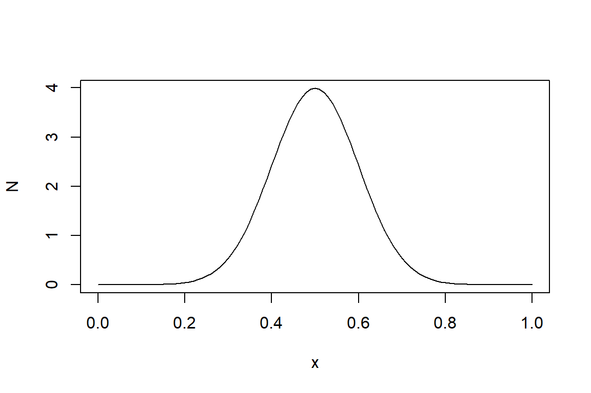

Chapter 1 R COMO CALCULADORA.
Uno de los primeros pasos para poder dominar R es comprender su uso como si fuera una calculadora. R realiza una variedad de operaciones matemáticas y lógicas de una manera muy sencilla. En las siguientes líneas se podrá observar algunas operaciones matemáticas1 básicas.
1.1 PRINCIPALES OPERACIONES MATEMÁTICAS.
Desarrollar calculos matemáticos en R es muy similar que usar una calculadora, a continuación mostramos los principales operadores aritméticos y su sintaxis en el entorno R.
| OPERACIÓN | SINTAXIS |
|---|---|
| Adición | + |
| Sustracción | - |
| Producto | * |
| División | / |
| División: Para Calcular el cociente | %/% |
| División: Para Calcular el residuo | %% |
| Potencia | ^ ** |
Veamos unos ejemplos de como usarlo.
Si deseamos sumar 4 más 3 en R. Tenemos que digitar en la consola 4+3.
## [1] 7Como se puede dar cuenta el resultado es 7.
Si deseamos realizar la sustracción de 5 en 7. Tenemos que digitar en la consola la operación 5-7.
## [1] -2Para el caso de la multiplicación se usa el operador *, es así que si deseamos multiplicar 3 por 4, entonces, tendremos que digitar en la consola 3*4.
## [1] 12Si se desea calcular la división usamos el operador /.
## [1] 3En efecto, al dividir 6 entre 2 nos resulta 3. Pero si se desea calcular sólo el cociente de una división inexacta usaremos el operador %/%.
## [1] 3El cociente resultante es 3. Asimismo, si sólo desea obtener el residuo de una división inexacta tendrá que usar el operador %%.
## [1] 1En efecto, el residuo de dividir 10 entre 3 es 1.
Otra operación fundamental es elevar un número a la potencia n. Veamos un ejemplo en elevar 4 al cubo.
## [1] 64Usted se puede dar cuenta que hemos usado el operador ^, pero este no es el único operador que calcula la potencia de un número, también se puede calcular si se usa el operador **.
## [1] 64Entonces, puede usar ^ o ** si desea calcular la potencia de un número.
Ahora veremos algunas operaciones matemáticas un poco más avanzadas, que nos servirán en un futuro para poder hacer cálculo estadístico, matemático y poder transformar variables cuando especifiquemos modelos econométricos.
| OPERACIÓN | SINTAXIS |
|---|---|
| Factorial | factorial() |
| Combinatorio | choose() |
| Raíz Cuadrada | sqrt() |
| Número de Euler-Exponente | exp() |
| Logaritmo Natural | log() |
| Valor Absoluto | abs() |
Si deseamos calcular el factorial de un número usaremos la función factorial(). Veamos un ejemplo del factorial de 5.
## [1] 120Nos resulta 120, recordar que el factorial de un número es la multplicación de \(n(n-1)(n-2)...1\). En el caso del factorial del 5, se multiplicó \(5*4*3*2*1\).
Asimismo, si deseamos calcular las combinaciones posibles de un número agrupado por otro, usaremos el combinatorio. En R se usa la función choose().
## [1] 10R nos arroja el valor de 10, recordar que el cálculo que se usó fue el siguiente: \(\frac{5!}{2!*3!}\).
Si tenemos la varianza de una variable, podremos calcular su desviación si le sacamos la raíz cuadrada. Entonces, si deseamos calcular la raíz cuadrada usaremos la función sqrt().
## [1] 3.464102Nos resulta 3.464102, es un número con 6 decimales y es posible que usted lo desee con más o menos decimales. En la siguiente sección veremos como mostrar los decimales que deseados.
Otra posible situación a la que se podrá enfrentar en un futuro es si desea calcular los Odds ratios de los modelos logit, recordemos que estos se calculan si se les saca el exponencial. Entonces si usted desea calcular el exponencial de un número tendrá que usar la función exp().
## [1] 2.718282En este ejemplo se ha calculado el exponencial de 1, lo que nos da el número de Euler que es 2.7182818.
Asimismo, si deseamos especificar nuestro modelo econométrico en logaritmos naturales y así poder hacer una interpretación a nivel de elasticidades tendremos que transformar las variables aplicándoles el logaritmo natural, para lo cual tendremos que usar la función log().
## [1] 1.098612Por otro lado, si deseamos calcular el valor absoluto de un número usaremos la función abs().
## [1] 2Ahora veremos como calcular las razones trigonométricas, para lo cual en la tabla siguiente se muestra la sintaxis de las razones trigonométricas.
| RAZÓN TRIGONOMÉTRICA | SINTAXIS |
|---|---|
| seno | sin() |
| coseno | cos() |
| tangente | tan() |
Para poder calcular las razones trigonométricas se tiene que considerar al ángulo en pi radianes. En R el valor de pi se puede obtener si digitamos en la consola pi, R comprende que al escribir pi se está llamando al número irracional pi.
## [1] 3.141593En efecto, nos resulta 3.1416.
Asimismo, como se puede dar cuenta para la cosecante, secante y cotangente no se tiene un función específica, ya que estan son las inversas del seno, coseno y tangente, respectivamente.
Si deseamos calcular el seno de 30. Entonces tenemos que usar la función sin() y especificar el ángulo en pi radianes.
## [1] 0.5A continuación veamos unos ejemplos para el coseno y la tangente.
## [1] 0.7071068## [1] 1Ahora si se desea trabajar omitiendo los pi radianes, se tendrá que usar las funciones sinpi(), cospi(), tanpi().
A continuación se muestran algunos ejemplos:
## [1] 0.5En efecto, es el mismo resultado que se obtuvo con la función sin(), solo que aquí se está omitiendo los pi radianes.
## [1] 0.7071068## [1] 11.2 DECIMALES EXACTOS Y REDONDEO DE CIFRAS.
1.2.1 NÚMERO DE CIFRAS.
Si al realizar los cálculos usted desea obtener los resultados con un número determinado de cifras se tendrá que usar la función print()2 en donde se tendrá que especificar el número de dígitos que se desea.
Por ejemplo deseamos obtener la raíz cuadrada de 12 pero queremos que el resultado se muestre 10 cifras. Entonces, usaríamos la siguiente sintaxis.
## [1] 3.464101615En efecto, nos muestra 10 cifras. A continuación se muestra un ejemplo adicional en donde le indicamos a R que nos muestre el mismo resultado pero ahora sólo con 3 cifras.
## [1] 3.464101615En efecto, tenemos la raíz cuadrada de 12 en 3 cifras.
Es importante saber que el número máximo de cifras que reporta R usando la función print() es de 17. Veamos un ejemplo, sabemos que pi es un número irracional por lo que tiene infinitos decimales. Entonces, si queremos mostrar 16 decimales, usaríamos la siguiente sintaxis.
## [1] 3.1415926535897931En efecto, nos arroja 16 decimales. ¿Por qué usamos 17 y no 16 en la función? ya que pi tiene un entero y queremos 16 decimales, se tiene que especificar 17. Pero si por ahí se le ocurriera mostrar pi con 20 decimales, usted usaría la siguiente sintaxis.
## [1] 3.1415926535897931Pero lamentablemente, sólo obtiene el mismo número de decimales que si hubiera usado print(pi, 17). Con lo cual queda demostrado que la función print() sólo puede mostrar hasta 17 cifras.
Pero no se frustre, en R hay otras funciones que permiten obtener los resultados con más decimales. Una de estas funciones es sprintf(), el cual puede mostrar más funciones pero los decimales después del 15 no serán tan exactos3.
Veamos un ejemplo, en donde deseamos que se muestren 50 decimales
## [1] "3.14159265358979311599796346854418516159057617187500"Por otra parte, si quieres trabajar con muchos decimales puede resultar tedioso usar en cada cálculo la función print() o sprintf(). Para solucionar esto se usa la función options(), por ejemplo si deseas que los calculos que vas a desarrollar se trabajen con 10 decimales tienes que correr en la consola la siguiente sintaxis.
Y con eso todos los resultados que se calculen se mostraran con 10 cifras. Asimismo, es preciso aclarar que esta función puede arrojar como máximo de 22 dígitos.
1.2.2 REDONDEO.
Si se desea redondear una operación se tendrá que usar la función round(), que al igual que el anterior se tendrá que especificar el número de dígitos, que en este caso será el número de decimales a los que se desea redondear.
A continuación se muestra un ejemplo:
## [1] 1.73205Sí sólo se considera la función round() redondeará a la cifra entera:
## [1] 21.3 GUARDAR O DEFINIR OBJETOS.
Hasta ahora sólo hemos hecho calculos y sólo los hemos mostrado en la consola. Pero puede surgir la necesidad de guardar estos cálculos para que en un futuro podamos generar cálculos más complejos o llamar a estos resultados. Entonces, surge la necesidad de guardar nuestros resultados.
En R todo es un objeto, desde un número, un vector, una variable, una matriz, un data frame, una lista, un factor, un gráfico, etc. Así que lo primordial será guardar estos objetos. Para lo cual tendremos la opción de usar uno de estos tres operadores si deseamos guardar estos objetos en la memoría del software.
Estos operadores son: <-, =, ->.
Por ejemplo si deseamos guardar un objeto que se llame a y que tome el valor de 8. Entonces, nosotros definiremos al objeto a de la siguiente manera.
Hemos usado uno de los operadores (<-) para definir objetos4. Ahora si deseamos llamar a este objeto, nosotros sólo digitamos el objeto en la consola y damos enter.
## [1] 8En efecto, podemos ver que el objeto a toma el valor de 8. Podemos usar los otros operadores indiferentemente para poder definir objetos. Veamos un pequeño ejemplo.
En este caso hemos definido a los objetos b, d y f con el valor de 6 a cada uno.
Veamos si los valores son los correctos.
## [1] 6## [1] 6## [1] 6En efecto, cada objeto toma el valor de 6.
Como se ha podido dar cuenta se abre una amplia gama de nombres con los que usted podría guardar objetos. Por ejemplo, podemos usar la palabra objeto para guardar la suma de 5+12.
Llamando a nuestro objeto objeto.
## [1] 17Como podemos ver, ahora objeto toma el valor de 17.
Pero como en todo software, los objetos no pueden tomar cualquier nombre. Es así que hay una regla única, que se debe tener en cuenta a la hora de guardar objetos, estos “NO pueden empezar con números”.
Veamos un ejemplo en donde intentamos definir un objeto en donde el nombre de este empiece con un número.
## Error: <text>:1:2: unexpected symbol
## 1: 1y
## ^Vemos que nos sale un mensaje de error, que nos dice que hay un símbolo inesperado en 1y el cual es el 1. Entonces, para definir objetos, estos nunca tienen que empezar con un número.
1.4 FUNCIONES.
Entonces, una vez que ya sabemos definir objetos, veremos otro de los objetos fundamentales en R, estos son las funciones5. Una función realiza un proceso o algoritmo que ha sido programado con anterioriedad.
Los creadores de R definieron funciones bases cuando crearon el software. Por ejemplo, una función base es sqrt(), el cual calcula la raíz cuadrada de un número. Nosotros también podemos definir nuestras propias funciones, al igual que lo han programado los creados de R. Esto es lo fundamental y maravilloso de los softwares de programación, ya que nos permite personalizar y adaptar a nuestras necesidades el software.
Veamos a manera de introducción cómo definir una función en R. Para esto se tendrá que hacer uso de la función function() en donde se tendrá que especificar argumentos que definiran la función que desemos crear.
Vamos empezar definiendo funciones como si fueran expresiones matemáticas. Por ejemplo, deseamos definir el objeto y que es función del argumento o variable x, es decir, x será el dominio y y será el rango.
# Se define la función "y" que tiene como argumento a "x"
# que tiene una forma cuadrática: x^2 +2
y<-function(x){
x^2+2
}Hemos creado el objeto y que es una función que tiene como argumento o variable a x. Es decir, cada vez que cambiemos el valor de x cambiará el valor de y, ya que x define a y.
Veamos como podemos usar esta función.
# Para poder evaluar la función "y" en un determinado valor de "x"
# En este caso x=0, la sintaxis sería la siguiente:
y(x=0)## [1] 2Como se puede observar si la función se evalua en cero, es decir, si x es igual a 0; la función tomará el valor de 2 (\(0^2+2=2\)).
Veamos otro ejemplo para que quede más claro. Ahora veremos que valor toma la función si x es igual a 8.
## [1] 66Nos resulta el valor de 66 (\(8^2+2=66\)).
Si se tiene en consideración una función en \(R^3\). Se tendá que tomar en cuenta dos argumentos o variables dentro de la función function(). como se muestra a continuación:
Se ha definido a la función z como una función de x y y. Usted puede estar pensando que el argumento y es la función que hemos definido anteriormente. Pero, déjeme decirle que no es así. Cuando se define funciones en R los argumentos de estás no toman las propiedades de los objetos guardados en la memoría del software. Es así que el nombre de los argumentos puede ser incluso el nombre de objetos que están guardados en la memoría, pero esto no implicará que el argumento juege el rol del objeto que está definido en la memoría del software. En palabras sencillas, el argumento y en la función z no tiene nada que ver con la función y que definimos anteriormente.
Veamos que resulta en la función z si x toma el valor de 0 y y el valor de 2.
## [1] 12Podemos ver que el resultado es 12 (\(0+4+4*2=12\)).
Para que quede claro, a continuación se muestra un ejemplo pero considerando la densidad de la función de distribución normal.
# Se define la función "N" que es la densidad de la función
# de distribución normal con media igual a 0.5 y
# desviación estándar de 0.1.
N<- function(x){
dnorm(x, mean =0.5, sd=0.1)
}
# Se evaluará cuando la variable aleatoria toma el valor de 0.2.
N(0.2)## [1] 0.04431848Es preciso aclarar que para poder obtener la densidad de la distribución normal se uso la función dnorm(), para mejor detalle podría revisar la documentación si digita en la consola ?dnorm y da enter a continuación.
Hemos visto una pequeña introducción sobre funciones, hasta el momento. En el capítulo 9, veremos a más detalle cómo programar funciones, pero para esto es necesario aprender más cosas que nos permitan programar cualquier tipo de funciones. Es así que en los capítulos posteriores aprenderemos más objetos como: vectores, matrices, listas, etc.
Por el momento como motivación y ver lo que se viene en los siguientes capítulos. Haremos un gráfico de la función de densidad N que hemos definido anteriormente. Y podrá ver con que facilidad se logra este objetivo.

Las operaciones que se realizarán están pensadas para un usuario que recién comienza en R.↩︎
La función
print()no sólo sirve para obtener los cálculos con un número determinado de cifras, sino que imprime caracteres y objetos, esto lo veremos más adelante, por el momento es suficiente conocer que nos sirve para mostrar las cifras que deseamos, de un cálculo.↩︎Para más detalles puede revisar la siguiente documentación: https://cutt.ly/hjfCXw5↩︎
El operador más usado y adecuado para definir objetos es
<-, pero el uso de los otros operadores es más usado en casos especiales, estos casos lo veremos más adelante.↩︎En esta parte del libro, veremos sólo una parte introductoria de funciones, en el capítulo 9 veremos a más detalle y profundidad este tema.↩︎